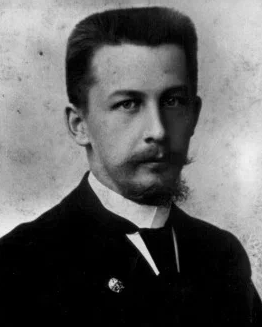
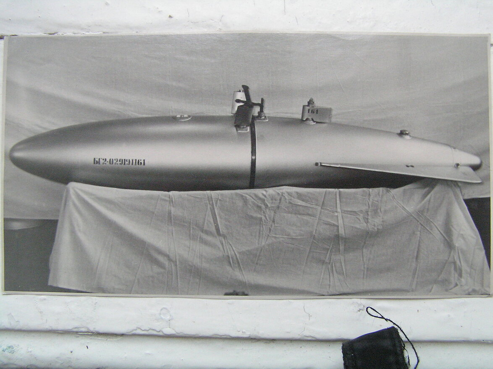
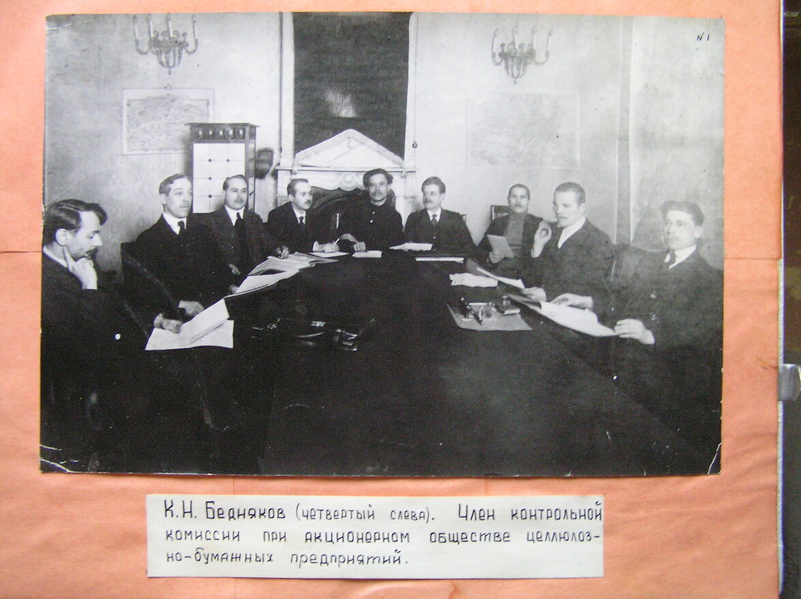
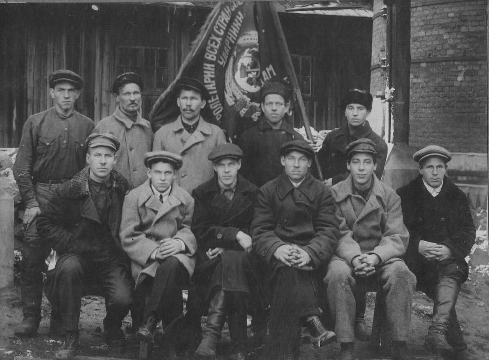
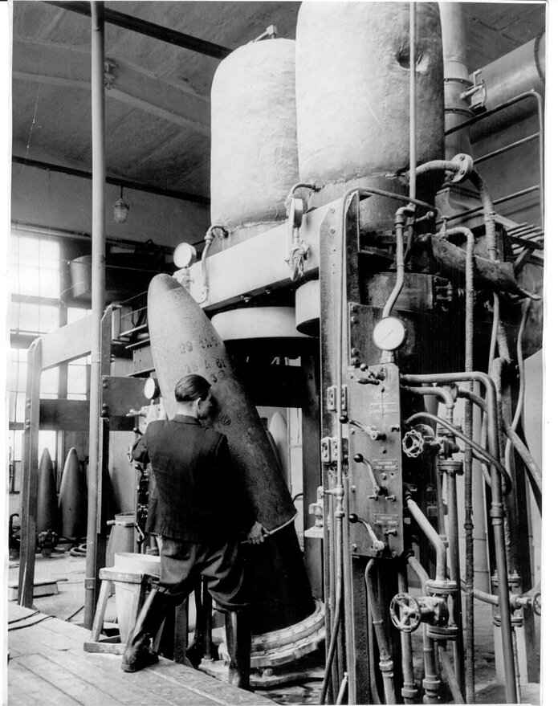
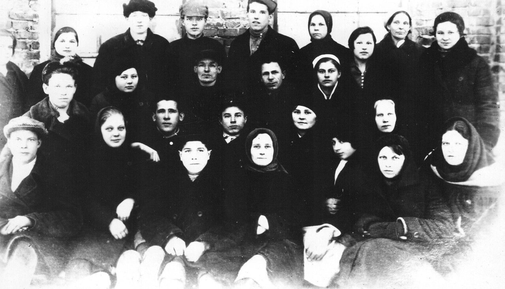
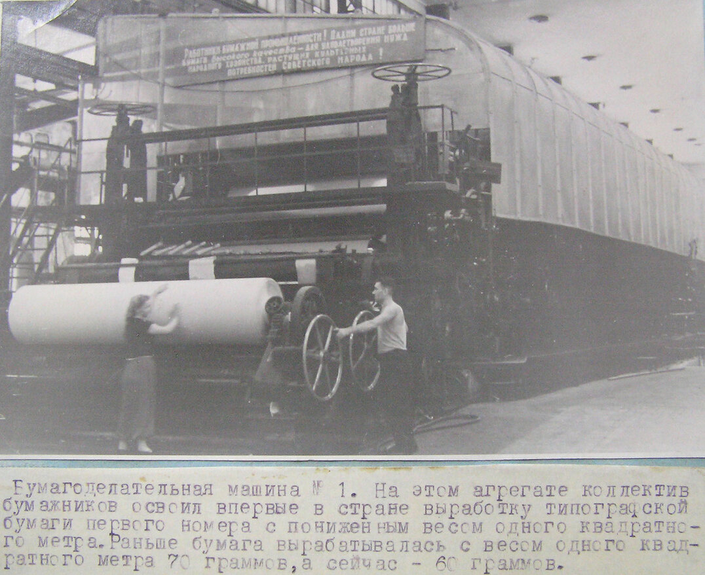
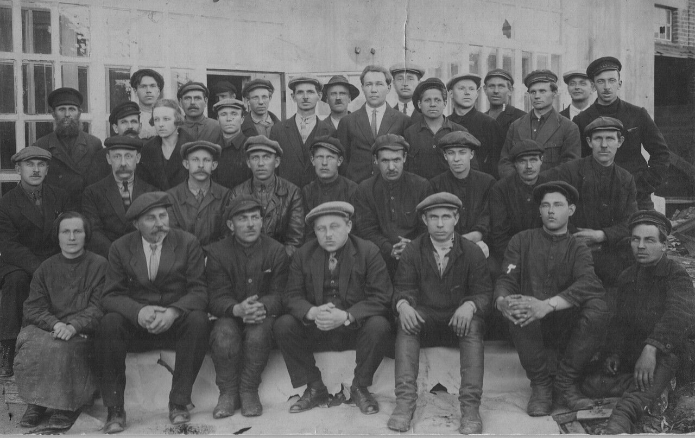
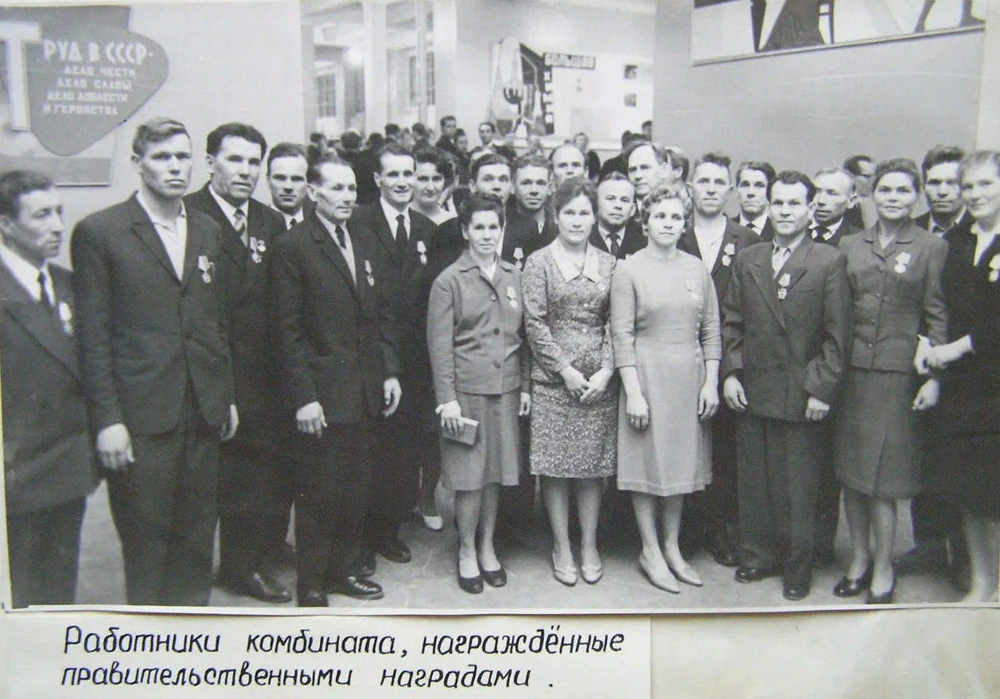

Сухонский картонно-бумажный комбинат
1911-1918 годы работы
Печаткин Николай
Вячеславович
Основатель завода, директор-распорядитель

Работография
Постройка Сухонского завода началась в 1914–1915 гг. по инициативе и под общим руководством Николая Вячеславовича Печаткина. 26 февраля 1916 г. Сухонское писчебумажное предприятие было включено в разряд предприятий, работающих на оборону, что дало значительные льготы. К августу-сентябрю 1917 г. строительство Сухонского целлюлозно-бумажного предприятия в г. Соколе было завершено, датой начала работы считается 11 августа 1917 г. В январе-феврале 1916 г. им был заключен договор с Главным артиллерийским управлением о строительстве Снарядного завода и выделении государственных субсидий.
Вклад и достижения
Основатель Сухонского завода 1914-1915 гг.
В январе-феврале 1916 г. им был заключен договор с Главным артиллерийским управлением о строительстве Снарядного завода и выделении государственных субсидий.
В январе-феврале 1916 г. им был заключен договор с Главным артиллерийским управлением о строительстве Снарядного завода и выделении государственных субсидий.
Основатель Сухонского завода 1914-1915 гг.


июль 1963
26 февраля 1916 г. Сухонское писчебумажное предприятие было включено в разряд предприятий, работающих на оборону.
Сухонский
картонно-бумажный комбинат


сентябрь 1917
К августу-сентябрю 1917 г. строительство Сухонского целлюлозно-бумажного предприятия в г. Соколе было завершено, датой начала работы считается 11 августа 1917 г.
Сухонский
картонно-бумажный комбинат


февраль 1916
В январе-феврале 1916 г. им был заключен договор с Главным артиллерийским управлением о строительстве Снарядного завода и выделении государственных субсидий.
Сухонский
картонно-бумажный комбинат
Архив

1954 г.
У бумагоделательной машины

1962 г.
В составе смены

1932 г.
Выдержка из статья “Сухонского ударника”

1947 г.
Награждение за трудовые успехи
1954 г.
У бумагоделательной машины
1962 г.
В составе смены
1932 г.
Выдержка из статья “Сухонского ударника”
1947 г.
Награждение за трудовые успехи
Трогает 0
Мы помним 0
Гордость 0